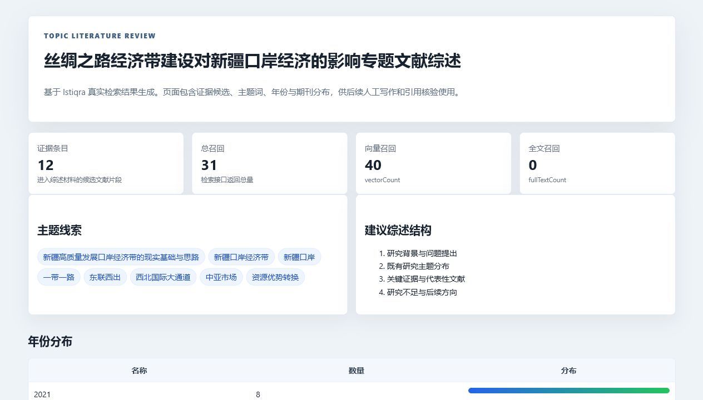
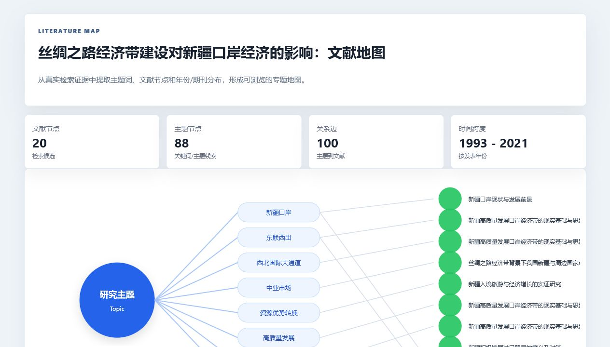
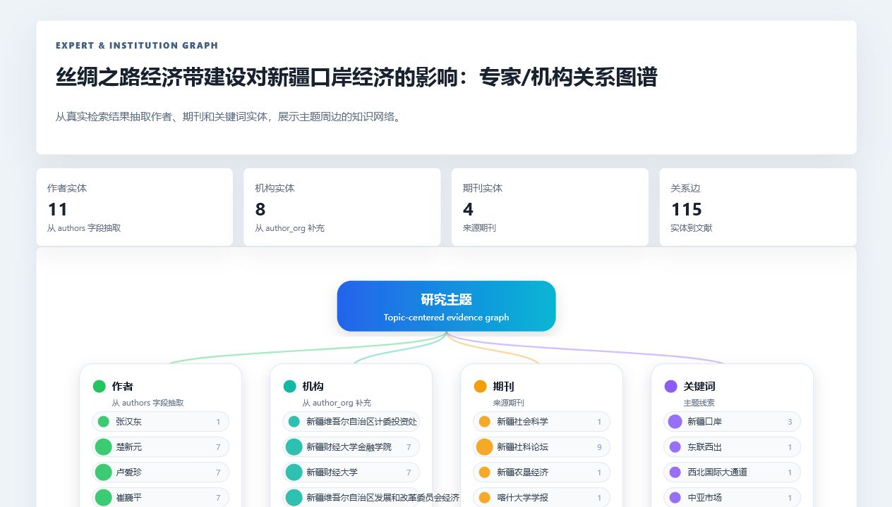
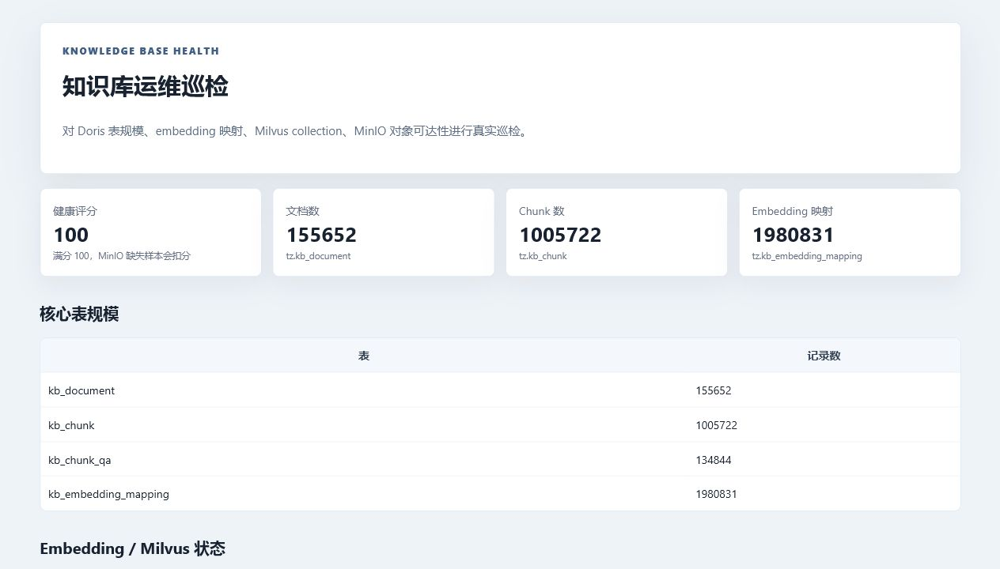

Utilities14最小可调用能力，直接接接口或渲染器
Workflows7把多个 utility 串成可复用过程
Use-cases4面向真实任务的最终入口
Verified Outputs4已用真实主题跑出 HTML 页面
一眼看懂三层关系
用户通常只点 use-case；use-case 决定业务顺序；workflow 复用过程；utility 执行最小动作。这样不会把所有 API、所有文档和所有渲染逻辑塞进一个巨大的 skill。
三层分别解决什么问题
分层不是为了形式感，而是为了让模型调用时少犯错：入口清楚、步骤清楚、能力边界清楚。
UTILITY
原子能力：最小、可跑、可验证
直接面对接口或渲染动作。它不负责完整业务，只保证“这一步能安全做好”。例如只读 SQL 只允许 SELECT/SHOW/DESC，MinIO 只负责读取对象，图表渲染只负责把统计数据变成 HTML。
istiqra-retrieval-search
doris-sql-readonly
kb-document-query
kb-chunk-query
minio-object-get
html-report-renderer
graph-renderer
WORKFLOW
过程编排：稳定复用的中间任务
把多个 utility 按固定顺序组合，产出中间文件。它不直接等于最终产品，但可以被多个 use-case 复用。例如证据包既能服务专题综述，也能服务文献地图和专家图谱。
assemble-evidence-pack
analyze-literature-corpus
build-literature-map
build-entity-graph
audit-knowledge-base
USE-CASE
业务入口：用户看到的完整交付
理解用户意图，选择 workflow，组织最终结果和说明。它应该告诉模型“先做什么、再做什么、输出什么”，而不是把所有接口细节塞在一个巨大脚本里。
topic-literature-review
literature-map-generator
expert-institution-graph
knowledge-base-health-audit
真实调用逻辑：以专题综述为例
样例主题：丝绸之路经济带建设对新疆口岸经济的影响。下面不是抽象流程，而是这套插件实际应该遵循的 use-case → workflow → utility 调用链。
用户点名 use-case：topic-literature-review
用户只需要说“围绕某主题生成专题文献综述”。use-case 层负责识别这是综述任务，需要证据、统计、引用预览和 HTML 报告。
进入业务入口：确定主题、限制召回数量、建立 run 目录。
调用 workflow：assemble-evidence-pack
先组装证据包，不能跳过。它会调用检索、文档元数据和 chunk 查询，把候选文献整理为 evidence.json 与 answer_context.md。
真实结果：专题综述样例召回 31 条，进入综述证据 12 条。
底层调用 utilities：检索与知识库读取
istiqra-retrieval-search 调检索接口；kb-document-query 补文档元数据；kb-chunk-query 读取片段、页码、bbox 等证据。
可追溯产物：evidence.json、answer_context.md。
调用 workflow：analyze-literature-corpus
对证据包做年份、期刊、作者、关键词和主题统计，再交给 chart-renderer 生成可视化分布。
真实页面：包含年份分布、期刊分布、主题线索。
调用 workflow：build-citation-preview
需要引用定位时，再调用 minio-object-get 与 citation-preview-renderer 生成 PDF 页面或 bbox 高亮预览。
作用：让综述不是“空写”，而是能回到证据位置核验。
最终 use-case 汇总：生成 HTML 报告
use-case 把证据、统计、提纲和引用候选交给 html-report-renderer，输出最终可读页面。
最终结果：专题文献综述 HTML、JSON、Markdown 证据上下文。
不同类型 skill 的真实样例
下面每一行都是当前插件里真实存在的 skill，展示它属于哪一层、负责什么、输入输出是什么。
| 层级 |
真实 skill |
适用场景 |
典型输入 |
典型输出 |
| utility |
istiqra-retrieval-search |
根据自然语言主题召回文献、chunk、召回类型、路径信息。 |
query、limit |
检索结果 JSON，含 documentId、title、score、markdownUrl、pdfUrl。 |
| utility |
doris-sql-readonly |
只读检查 Doris/Iceberg 表规模、字段、统计数据。 |
SELECT / SHOW / DESC |
rows JSON；拒绝 DDL、DML、删除和写入。 |
| utility |
minio-object-get |
按知识库路径读取 Markdown/PDF 对象状态或预览文本。 |
object path、preview bytes |
对象 size、etag、content preview 或下载文件。 |
| workflow |
assemble-evidence-pack |
专题综述、地图、图谱都需要先拿证据包。 |
topic、limit |
evidence.json、answer_context.md、证据表 HTML。 |
| workflow |
build-literature-map |
把证据包转为主题节点、文献节点和连接关系。 |
evidence.json |
literature_map.json、literature_map.html。 |
| workflow |
build-entity-graph |
从文献里抽取作者、机构、期刊、关键词并建立关系。 |
evidence.json、document metadata |
entities.json、graph.json、graph.html。 |
| use-case |
topic-literature-review |
面向用户的专题文献综述助手。 |
研究主题 |
综述提纲、证据卡片、年份/期刊分布、HTML 报告。 |
| use-case |
knowledge-base-health-audit |
面向运维的知识库巡检。 |
sample size、环境变量 |
健康评分、表规模、embedding 状态、MinIO 检查表。 |
一个完整业务场景：四个 use-case 如何共用底层能力
同一个主题可以触发不同 use-case。它们复用相同的 evidence、metadata、entity、render utilities，但最终交付不同。
场景 A：研究人员要写综述
调用 topic-literature-review。它重点关注证据候选、主题线索、综述结构、年份和期刊分布。底层复用检索、chunk 查询、语料统计和 HTML 报告渲染。
topic-literature-review
assemble-evidence-pack
analyze-literature-corpus
html-report-renderer
场景 B：负责人要看研究版图
调用 literature-map-generator 和 expert-institution-graph。前者看主题与文献分布，后者看作者、机构、期刊、关键词网络。
literature-map-generator
expert-institution-graph
build-literature-map
build-entity-graph
graph-renderer
场景 C：运维人员要查知识库质量
调用 knowledge-base-health-audit。它不从主题综述出发，而是检查 Doris 表规模、embedding 映射、Milvus collection 和 MinIO 对象可达性。
knowledge-base-health-audit
audit-knowledge-base
doris-catalog-inspect
kb-embedding-map-query
health-check-renderer
场景 D：未来扩展新能力
如果以后加入表格可视化、视频生成、文献地图增强、PPT 生成，只需要新增 utility 或 workflow；旧 use-case 可以复用，新 use-case 也能组合。
chart-renderer
literature-map-renderer
future-video-renderer
future-briefing-workflow
已跑出的真实 HTML 样例
这些不是静态演示图，而是插件已经用真实主题跑出的 use-case 页面。点击标题可打开对应 HTML。

专题文献综述助手：12 条证据、31 条总召回、年份分布、期刊分布、主题线索与证据卡片。

文献地图生成器：20 个文献节点、88 个主题节点、100 条关系边、1993-2021 时间跨度。

专家/机构关系图谱：11 个作者实体、8 个机构实体、4 个期刊实体、115 条关系边。

知识库运维巡检：健康评分 100，文档 155652，chunk 1005722，embedding 映射 1980831。
为什么不做成一个巨大 skill
大 skill 当然也能跑，但会让调用不稳定、上下文爆炸、失败难定位。三层结构的价值主要体现在下面四点。
1. 降低误调用
use-case 只暴露业务入口，模型不需要在 20 多个底层工具里猜。需要查文献就进综述或地图，需要运维就进巡检。
2. 中间产物可核验
workflow 会产出 evidence.json、graph.json、health.json 这类中间文件。任何一步失败，都能定位是检索、SQL、MinIO 还是渲染问题。
3. 能复用，不重复造轮子
assemble-evidence-pack 同时服务综述、地图、图谱；entity-extractor 同时服务图谱和主题分析；HTML 渲染器服务所有报告。
4. 后续扩展成本低
未来新增“视频解读”“PPT 汇报”“表格分析”等，只需要新增渲染 utility 或 workflow，现有业务入口不用推倒重写。
推荐调用方式：
用户在 Codex 里说清楚业务目标，例如“使用 Istiqra Research Skills，围绕某主题生成专题综述、文献地图和专家机构图谱”。Codex 会从 use-case 层进入，按 workflow 层组织步骤，再调用 utility 层执行接口与渲染。